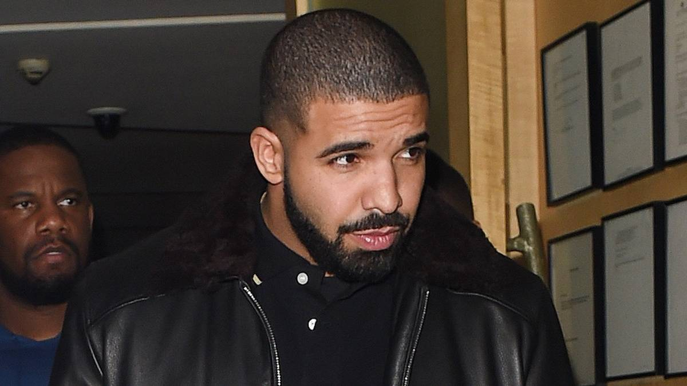

Drake & Lola Young's Courtroom Showdowns: Who Owns The Art?
{kind=link}

Two very different artists—Lola Young, a rising British soul singer, and Drake, one of rap’s biggest global exports— have both launched their own courtroom dramas that expose the same fault line: who controls the narrative when art, authorship, and image collide?
Young’s journey to the courtroom began only just last week, filing a lawsuit in London against the producer of her breakout hit “Messy,” Carter Lang, over songwriting credits. Meanwhile, Drake’s messy high-profile beef with Kendrick Lamar and subsequently his own record label, is reaching its conclusion with the news that a federal judge has dismissed his defamation case.
Drake has been locked in a long-running feud with Lamar for years, with the pair issuing in that time several high-profile diss tracks against each other in that time. Things escalated last year with the release of “Not Like Us” by Lamar, a particularly pointed diss track that threw some particularly unsavory accusations at Drake. The song was an instant hit, and Drake certainly didn’t like it.
The rap megastar was so incensed by Lamar’s slings and arrows that he launched legal action against his own record label, Universal Music Group (also home to Lamar). Drake filed his lawsuit last November, not only alleging the defamatory nature of "Not Like Us," but also accusing UMG of using bots and payola-like tactics to inflate the track’s streams artificially.
Drake Followed His Beef All The Way To The Courtroom And Lost
The dispute escalated further in January when Drake added a long list of label executives to the case, whom he alleges conspired behind the scenes in support of Lamar. Last Thursday, a federal judge signaled that Drake should finally just accept defeat, dismissing the lawsuit and declaring Lamar’s salty diss as not defamatory but a "non-actionable opinion."
"Although the accusation that Plaintiff is a pedophile is certainly a serious one, the broader context of a heated rap battle, with incendiary language and offensive accusations hurled by both participants, would not incline the reasonable listener to believe that 'Not Like Us' imparts verifiable facts," said the judge, officially declaring the legal limits of a rap beef.
For their part, Universal Music Group signals that there is no love lost between Drake and the label, confirming in a public statement that it looks forward to "continuing our work successfully promoting Drake's music and investing in his career." However, the label did not forgo its chance to throw a little bit of shade in Drake’s direction over the audacious feud.
"From the outset, this suit was an affront to all artists and their creative expression and never should have seen the light of day," UMG said in a statement.
Lola Young’s Beef Comes Down To Credit Being Given Where Credit Is Due
In the time-honored fashion of a music industry beef, Lola Young says her lawsuit is about protecting her rep. Young’s legal action is focused on intellectual property, with her lawyers alleging in the suit that Lang claimed writing credits for four of her songs, which she disputes.
"It is with immense disappointment, especially given recent events, that we have had no choice but to respond to recent writing credit claims from Carter Lang on four Lola Young songs by issuing legal proceedings on her behalf," said a statement from her lawyers.
Clarifying that Lang’s claims of songwriting credit are "strongly refuted," the suit insists that it will "not allow Lola's reputation and integrity to be called into question—particularly so long after the sessions took place and agreements were put in place."
News of the dispute has only just reached the public, though reportedly, the feud has already been heating up for months. It is currently unknown which tracks in particular the pair are beefing over since they had worked together successfully in the past. Carter is credited as one of four songwriters on “Messy,” the 2024 hit that launched Young into the stratosphere.